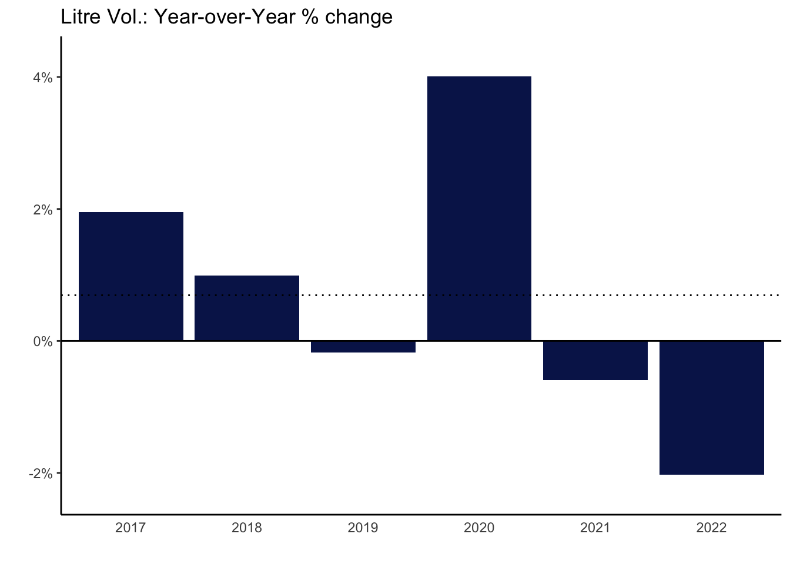

LMR Explore - All
BC LDB Liquor Market Review Data
Intro: What is this?
BC Liquor Distribution Board releases its ‘Liquor Market Review’ of market statistics on a quarterly basis. The reports are made available to the public through BC LDB website.
The reports are published in PDF format, providing data for the most recent quarter as well as previous four quarters, to allow for quarterly comparison back to same quarter of previous here.
Data here is extracted and compiled from reports going back to June 2015. This allows for more complete exploration and analysis of the data.
TREND OVERVIEW
All Categories
Annual
$ Sales
What are the annual trends in total sales in recent years?
# get full years for comparison
drop_yr <- c(2015,2023) ## drop partial yrs for simplicity
trend_yr <- lmr_data %>% filter(cyr>drop_yr[1] & cyr<drop_yr[2]) %>%
group_by(cyr) %>% summarize(netsales=sum(netsales),
litres=sum(litres))
# add % chg YoY, $/l
trend_yr <- trend_yr %>% mutate(
pc_chg_sales=netsales/lag(netsales)-1,
pc_chg_litres=litres/lag(litres)-1,
dollar_per_litre=netsales/litres
)ch_title <- "Net Sales $ Trends - All Categories"
trend_yr %>% ggplot(aes(x=as.factor(cyr), y=as.numeric(netsales)))+
geom_col()+
scale_y_continuous(labels=comma_format(prefix="$", scale=1e-9,suffix="B"), expand=expansion(mult=c(0,0.1)))+
labs(title=ch_title,y="",x="")+
theme_classic()+
theme(axis.ticks.x = element_blank()) What is YoY % change?
# chart % chg sales YoY
ch_title <- "Net Sales: Year-over-Year % change"
trend_yr %>% filter(cyr!=min(cyr)) %>%
ggplot(aes(x=as.factor(cyr), y=pc_chg_sales))+geom_col()+
scale_y_continuous(labels=percent_format(), expand=expansion(mult=c(0,0.1)))+
labs(title=ch_title,y="",x="")+
theme(axis.ticks.x = element_blank()) 
Volume (Litres)
ch_title <- "Litre Volume Trends - All Categories"
trend_yr %>%
ggplot(aes(x=as.factor(cyr), y=as.numeric(litres)))+
geom_col()+
scale_y_continuous(labels=comma_format(scale=1e-6,suffix="M"), expand=expansion(mult=c(0,0.1)))+
labs(title=ch_title,y="",x="")+
theme_classic()+
theme(axis.ticks.x = element_blank()) 
# chart % chg liters YoY
ch_title <- "Litre Vol.: Year-over-Year % change"
trend_yr %>% filter(cyr!=min(cyr)) %>%
ggplot(aes(x=as.factor(cyr), y=pc_chg_litres))+
geom_col()+
scale_y_continuous(labels=percent_format(), expand=expansion(mult=c(0.1,0.1)))+
geom_hline(yintercept=0)+
labs(title=ch_title,y="",x="")+
theme(axis.ticks.x = element_blank()) 
$/Litre
# chart $/ltr
ch_title <- "$/Litre Trends - All Categories"
trend_yr %>%
ggplot(aes(x=as.factor(cyr), y=dollar_per_litre))+
geom_col()+
scale_y_continuous(labels=label_comma(prefix="$", accuracy=0.01), expand=expansion(mult=c(0,0.1)))+
labs(title=ch_title,y="",x="")+
theme_classic()+
theme(axis.ticks.x = element_blank()) 
Quarterly
What are the quarterly trends in total sales in recent years?
trend_ttl <- lmr_data %>% group_by(fy_qtr, start_qtr_dt) %>% summarize(netsales=sum(netsales),
litres=sum(litres))`summarise()` has grouped output by 'fy_qtr'. You can override using the
`.groups` argument.trend_ttl %>% ggplot(aes(x=start_qtr_dt, y=as.numeric(netsales)))+geom_col()+
scale_x_date(breaks=trend_ttl$start_qtr_dt, date_labels="%b %Y")+
scale_y_continuous(labels=comma_format(prefix="$", scale=1e-6,suffix="M"), expand=expansion(mult=c(0,0.1)))+
labs(title="Net Sales $ Trends - All Categories",y="",x="")+
theme_classic()+
theme(axis.text.x=element_text(hjust=0, vjust=0.5, angle=90),
axis.ticks.x = element_blank()) What are the quarterly trends in volume sales in recent years?
What are trends in $/liter - all categories?
By Major Category
What are the quarterly trends by major category in recent years?

What are patterns in % breakdown by major category?
What is the quarterly % chg by major category?
What is the annual % chg by major category?
What is % change in YoY quarter by major category?
What are trends in $/liter by category?